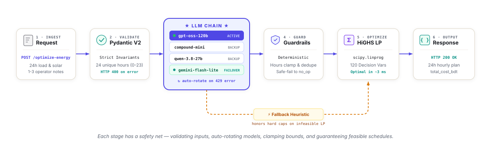
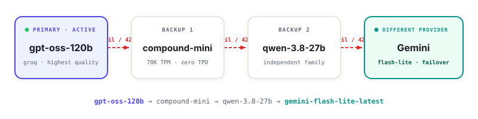

From operator notes to a 24-hour LP-optimal campus energy schedule.
Given a 24-hour campus scenario plus 1–3 operator notes, return the cheapest schedule that obeys every note.
// operator note "Reduce solar to 20% from 1 PM to 3 PM." // becomes { "hours": [13, 14], "factor": 0.2 }
Every request flows through five stages — validation, interpretation, guardrails, LP, and a heuristic fallback.

Natural language hides structure. Hidden cases paraphrase — we win with a tight prompt, a deterministic pre-parser, and safe-fail validation.
"Drop solar to 20%" and "leave roughly one-fifth" are the same directive.
// in "Cap grid at 200 from 6 PM until 9 PM." // out { "note_index": 0, "directive_type": "max_grid_window", "structured_adjustment": { "hours": [18, 19, 20], "max_grid_kwh": 200 } }
OpenAI primary. Groq fallback. Gemini last resort. Every rotation is automatic — no user-visible failure.

All ten public samples pass interpretation and end-to-end. Optimizer cost equals the reference on every case. Spec audit passes every section of the problem statement.